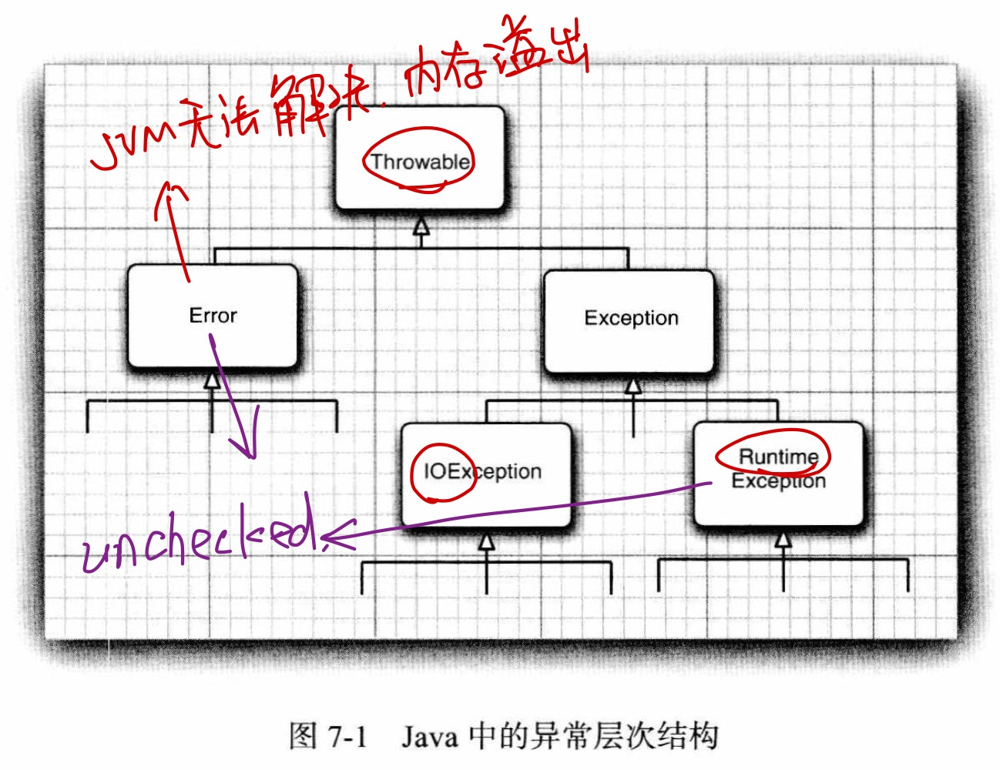

javaCC
第一章 线程管理
1.1 简介
并发包括进程级别的并发和线程级别的并发。
- 进程是资源分配的基本单位，线程是调度的基本单位
- 每个线程都有一份栈，但共享一个堆，每个进程有一个堆
当多线程应用程序运行在单核处理器上时（或者线程执行顺序不是预先定义的），程序就是并发运行的；当运行在多个处理器或多核处理器上时（线程按照指定顺序执行），程序是·并行运行的
一个 Java 应用程序至少有三个线程，main 线程，GC 线程，异常处理线程
1.2 线程的创建、运行和设置
Java是纯OO语言，线程也是一个对象，创建线程的方法有
-
继承Thread，重写 run
-
实现 Runnabe 接口，重写 run，以接口对象为参数创建 Thread 对象
-
实现 Callable 接口，重写 call（可以有返回值，支持泛型），接口对象为参数创建 FutureTask 对象，后者再为参数创建 Thread 对象，FutureTask.get() 接受返回值
-
线程池
更推荐实现接口创建线程，即 has-a 的方式定义线程，而不是 is-a，把并行运行的
任务与运行机制解耦线程属性有
-
id
-
name
-
priority，1是最低优先级，10是最高优先级。仅供底层操作系统作为参考，不能保证任何事情
-
status，Thread.State 枚举中定义
-
NEW，创建完毕但未开始执行
-
RUNNABLE，正在JVM中执行
-
BLOCKED，阻塞且等待调度
-
WAITING，此线程在等待另外一个线程
-
TIMED_WAITING：此线程等待另外一个线程一段时间
-
TERMINATED，终止，执行完毕
6种状态里没有os中提到的
就绪（获得了除处理机外的一切资源），这里的阻塞状态可能既包括了os中的就绪，也包括了os中的阻塞（等待某资源，即使处理机空闲）阻塞发生在一个线程试图获取一个内部的对象锁（而不是java.util.concurrent中的Lock），而这个锁被其他线程占有；当线程等待另一个线程通知调度器出现一个条件时，线程进入等待，比如调用wait，或者等待java.util.concurrent中的Lock。超时等待是调用了有超时参数的方法。实际上阻塞与等待没有太大区别中断与终止和阻塞两种状态不同。中断是假终止，除了已经废弃的stop方法，实际上没有办法可以强制线程进入终止。如果线程被阻塞就无法检查中断，会抛出InterruptedException。中断只是表示该线程需要处理，被中断的线程可以决定如何响应中断，一般的响应措施就是return，进行终止1
2
3
4
5
6
7
8
9Thread.currentThread().getName();
Thread.NORM_PRIORITY;
thread= new Thread();
thread.setPriority(); //抛出IllegalArgumentException，以防传入的优先级不是1-10
thread.setName();
thread.getState();
thread.start();只有调用了start，一个新的执行线程才会被创建
-
1.3 线程中断
Java使用中断机制向线程表明想要终止它，线程对象可以决定如何响应中断请求
1 | |
Thread.interrputed()静态方法是测试当前线程（正在执行这个指令的线程）是否被中断，调用之后会将中断bool值重置为false，thread.isInterrupted()不是静态方法，需要通过对象调用，不会改变线程的中断状态
1.4 控制线程中断
Java 中的一些 API 如 sleep 或 wait，当线程在 BLOCKED 或 WAITING 的时候被中断会抛出 InterruptedException，可以 catch 处理。或者自己在程序中想要处理中断也可以自己控制线程中断，比如有复杂算法或递归调用的程序中可以手动抛出InterruptedException
1 | |
1.5 线程的休眠和唤醒
线程有时需要在指定时间暂停执行，此时不需要使用任何资源。可以用静态方法 Thread.sleep 或 TimeUnit 枚举元素的 sleep 方法（调用当前Thread的sleep）
调用 sleep 时，线程释放 CPU 资源，但线程在休眠时发生中断会立即抛出 InterruptedException 异常，而不会等到休眠时间结束
在并发 API 中，yield 方法也能使线程释放 CPU 资源，此方法告知JVM当前线程可以为其他任务而放弃自己的CPU资源，JVM不保证一定会响应该请求。通常只在调试中调用此方法
1 | |
1.6 等待线程执行结束
有时某些程序必须等必要的资源初始化完毕之后才能开始执行后续的工作，此时可以将初始化任务作为单独的线程执行，待其结束后再执行其余线程。在线程a中调用线程b的join方法，线程a即可阻塞，等待线程b执行结束
1 | |
join有带时间参数的重载，最多等待指定的毫秒数，时间到了就算线程没结束也会直接继续运行
1.7 守护线程的创建与运行
有名为守护线程(daemon)的特殊线程，当程序中仅剩守护线程时，JVM结束守护线程，然后结束程序。正因为最后结束运行，守护线程一般是为用户线程提供服务而位于后台，它通常包含一个无限循环等待请求服务，例如Java中的GC。setDaemon(bool isDaemon)必须在start之前执行
1 | |
一旦线程开始执行，其daemon状态便不可更改，此时调用setDaemon将抛出IllegalTheadStateException，通过isDaemon可以检查一个线程是否是守护线程
1.8 处理线程中的不可控异常
可检查异常必须在方法的throws中声明，不能预料到的非检查异常不需要声明或捕获

线程对象如果抛出checked异常必须捕获处理，因为run不接受throws，如果是unchecked异常会默认将异常输出并退出，但Java中也提供了处理unchecked异常的机制，避免程序结束
1 | |
当线程抛出unchecked异常时，JVM将调用配置的相应方法，如果没配置会打印信息，然后结束抛出异常的线程
Thread还定义了静态方法setDefaultUncaughtExceptionHandler用来给所有线程对象设置默认的异常处理器。JVM会为异常依次查找
- 本节的UncaughtExceptionHandler
- 1.10节中的线程组异常处理器
- 默认异常处理器
如果都没有找到就会打印异常信息，结束抛出异常的线程
1.9 使用线程本地变量
数据共享在多个线程间非常重要，如果实现Runnabe接口并创建了一个对象，然后用此Runnabe对象为参数创建多个线程来执行此任务，所有线程都能够共享该任务对象的属性，可能会导致线程不安全
多线程执行同一个Runnabe实例时，有方法能够独享一个变量。Java的并发API中提供了线程本地变量，只要线程存活，线程本地变量就会一直存在
1 | |
线程本地变量机制会为每个使用该属性的线程保存独立的属性值，可以用get和set读写。第一次访问线程本地变量的时候，如果与该线程对象关联的属性值不存在，将会触发initialValue方法，为该属性赋值并返回初始值
ThreadLocal类提供了remove方法用于删除调用线程的线程本地变量
并发API中提供的InheritableThreadLocal类能够实现本地变量继承，当线程A有一个线程本地变量，它又创建了线程B，那么线程B也有了相同的线程本地变量。也可以重写childValue，该方法为新创建的子线程初始化本地变量，接受父线程的本地变量值作为参数